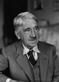

Amerikalı filozof John Dewey (1859–1952) kitapları, dersleri ve sınıfta yaptığı deneyleri ile Amerikan eğitim sistemine büyük yenilikler getirdi. Öğretmenlik mesleğini kökten bir biçimde yeniden tanımladı. Öldüğü sırada Amerika’nın en önemli eğitimcisi olarak görülüyordu. Savaş, barış ve sivil haklar konularında önde gelen entelektüellerden biriydi.

Dewey’in eğitim felsefesi 1893 tarihli bir denemede şöyle özetlenmişti: “Eğitimi gelecek yaşam için hazırlık olmaktan çıkarıp onu şimdiki zaman için anlamlı hale getirin.”
Dewey Kuzey Vermont’da doğdu. Devlet okullarında ve Vermont Üniverstesi’nde eğitim gördü. Baltimore’daki Johns Hopkins Üniversitesi’nde felsefe eğitimi aldı. Büyük ölçüde pragmatik filozof William James’ten (1842–1910) etkilenmişti. 1894 yılında, dört yıl önce kurulmuş olan Chicago Üniversitesi’nin Felsefe Bölüm Başkanı oldu.
1896 yılında Chicago’da ünlü “Deneme Okulları”nı (Laboratory Schools) açtı. Adına uygun bir biçimde bu okullarda ilerici eğitim yaklaşımını test etti ve üniversitenin pedagoji bölümünde okuyan öğrencileri istihdam etti.
Dewey’in reformları çocukların ezberlenmiş komutları uygulamaları yerine doğrudan öğretimi esas alıyordu. Örneğin; öğrencilerden Amerikan Devrimi ile ilgili gerçekleri ezberlemeleri değil dönemin tarihi ile ilgili proje grupları oluşturmaları isteniyordu. Dewey’in eğitim reformu felsefi ve politik düşünceleri ile de doğrudan alakalıydı. Ona göre sadece iyi eğitilmiş vatandaşlar demokratik bir sistem içinde kendi kendilerini yönetebilecek kapasiteye sahip olabilirdi.
Dewey politikada aktifti. Kadınlara oy hakkı verilmesini ve ABD’nin I. Dünya Savaşı’na katılmasını destekledi. Savaştan sonra sola kaydı. Büyük Buhran sonrasında uygulamaya konulan New Deal’i (Yeni Düzen) yetersiz bulduğu için eleştirdi. Pearl Harbor Olayı’na kadar Amerika’nın II. Dünya Savaşı’na katılmasına karşı çıktı. Pek çok liberal aydından farklı olarak anti demokratik olduğunu düşündüğü için komünizme karşı çıkıyordu.
Dewey 1904 yılında Chicago’dan ayrıldı. Hayatının geri kalan kısmını Columbia Üniversitesi’nde geçirdi. Doksan iki yaşında New York’ta zatürreden öldü.
Ek Bilgiler
1- Dewey “Amerika Sivil Özgürlükler Birliği”nin ilk üyelerinden biriydi.
2- 90. yaş gününde kendisine bir pragmatistin kalbini ısıtabilecek çok güzel bir hediye verildi: para. New York’ta düzenlenen gala töreninde arkadaşları ve destekçileri ona 90 bin dolar verdiler. Dewey bu parayı istediği yere bağışlayabilecekti.
3- Dewey iki kez evlendi. İlk eşi Harriet Alice Chipman ile Michigan Üniversitesi’nde bir profesörken tanıştı. Chipman aynı okulda öğrenciydi. Onun ölümünün ardından Roberta Grant ile evlendi.